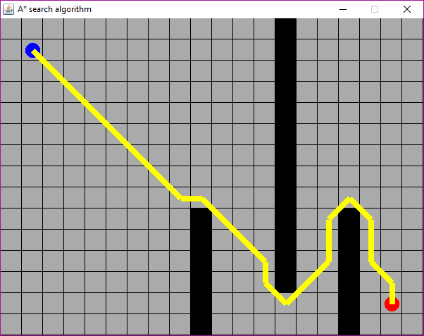

A* pathfinding algorithm
Description
Draw two dots on a piece of paper then connect the dots with the shortest path from one to another. It would be really easy to see where the dots are and where we can draw our path. We take our pathfinding ability for granted, but how do we let a computer solve such a problem?We could use some sophisticated neural network to solve it, or perhaps something more simple. A set of steps our program will execute that will eventually result in the shorest path. In other words; an algorithm.
There are many algorithms and variations among them, but here I want to showcase one such algorithm, know as A* (A star). Named after the search algorithm A1 and A2 from back in the late 60s.
Down below you see a screenshot form my little demo which has some obstacles placed on the map. If you have the program running, click on a grey box to disable/enable it. The path is drawn between the blue and red dot. The path can pass along a corner as long as its not blocked by another corner.
